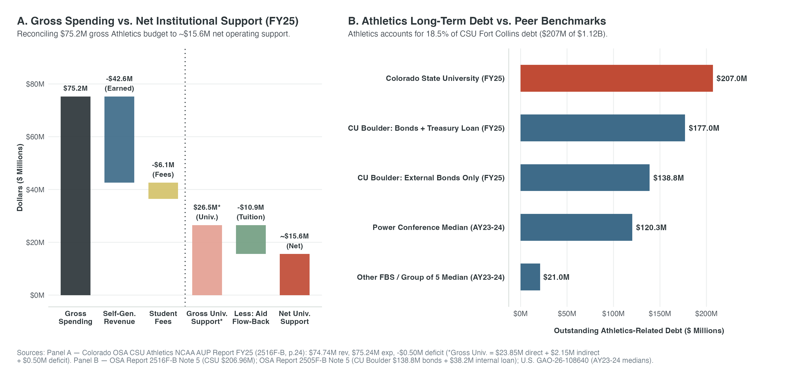

| FY25 CSU Athletics Gross-to-Net Reconciliation | ||||
| Reconciling $75.24M Total Expenditures to ~$15.57M Net Institutional Support (Excl. Bonded Debt Service) | ||||
| Step | FY25 Component (OSA Report 2516F-B) | FY25 Amount ($M) | Category | Notes |
|---|---|---|---|---|
| 1 | Total Athletics Operating Expenses | -$75.24M | Gross Outflow | FY25 OSA NCAA AUP total operating expenses ($75.24M; includes $14.34M debt service/leases, $12.75M coaching, $10.15M staff, $10.93M student aid). |
| 2 | Self-Generated External Revenue | +$42.60M | Earned Offset | Tickets ($8.17M), Contributions ($12.01M), Sponsorships/Royalties ($6.70M), Conf/Media/NCAA ($8.17M), Concessions/Guarantees/Other ($7.54M). |
| 3 | Mandatory Student Athletics Fees | +$6.14M | Student Fee Offset | Dedicated student athletics fees ($6.14M, 8.2% of total revenue). |
| 4 | Direct & Indirect Institutional Support | +$26.00M | University Support | Direct support ($23.85M, incl. $16.91M E&G base B2 allocation + transfers) + Indirect support ($2.15M). |
| 5 | Reported Operating Deficit (FY25) | -$0.50M | Net Accounting Balance | Excess (Deficit) of Revenues over Expenses (-$0.50M). |
| 6 | Memo: Scholarship Tuition Flow-Back | +$10.93M | Internal Campus Return | Athletic Student Aid ($10.93M) paid back to campus for tuition/fees/room/board (reduces net economic cash drain). |
| 7 | Estimated Net Institutional Operating Support | -$15.57M | Net University Support | Gross Institutional Support ($26.00M) + Deficit ($0.50M) minus Tuition/Aid Flow-Back ($10.93M) = ~$15.57M net operating support (excl. student fees; ~$21.71M incl. student fees). |
| Source: Colorado OSA Statutory NCAA AUP Report 2516F-B (FY25); CSU Office of Budgets B2 E&G Allocation ($16.91M FY25 / $17.15M FY26). | ||||
Athletics Accounting & Long-Term Capital Debt Context
Reconciling CSU’s $75.24M Gross Athletics Budget Down to Net Institutional Support, Bond Covenants, and Counterfactuals
Placing a $75.24M gross Athletics budget alongside a $61.3M–$70.7M E&G operating gap makes it natural to ask whether restructuring or reducing Athletics could close the university’s shortfall. Audited filings from the Colorado Office of the State Auditor (csu_ncaa_aup_fy19.pdf–fy25.pdf, Report 2516F-B) clarify both perspectives: Athletics receives meaningful ongoing institutional support (~15–20% of Ledger B’s multi-year structural pressures), yet gross expenditure numbers substantially overstate how much general-fund cash could be freed quickly.

1. Reconciling Gross Spending ($75.24M) to Net Institutional Support (~$15.57M)
Two accounting offsets narrow the $75.24M headline figure to roughly ~$15.57M per year in net university operating support (~$21.71M if dedicated student fees paid outside E&G are included):
- Self-Generated Revenue ($42.60M, 57.0% of total revenue): Ticket sales ($8.17M), donor contributions ($12.01M), conference/media/NCAA distributions ($8.17M), sponsorships/royalties ($6.70M), and game guarantees/concessions ($7.54M) depend directly on operating NCAA programs.
- Tuition & Housing Flow-Back ($10.93M): Against $23.85M in direct university support (anchored by
B2 Athleticsbase E&G allocation of $16.91M in FY25 and $17.15M in FY26) plus $2.15M indirect support and $6.14M in mandatory student fees, Athletics returned $10.93M to CSU for student-athlete tuition, fees, room, and board.
| Seven-Year Audited CSU Athletics Financial Trajectory (FY19–FY25 OSA Reports) | |||||||
| Expenses Increased +36.8% Since FY20 ($54.99M → $75.24M), While Bonded Athletics Debt Stands at $206.96M | |||||||
| FY | Self-Gen. Rev | Univ. Support + Fees | Support Share | Total Expenses | Student Aid | Fac/Debt Exp | Ath. Debt |
|---|---|---|---|---|---|---|---|
| 2019 | $32.35M | $23.94M | 42.5% | $54.29M | $9.44M | $8.57M | $238.11M |
| 2020 | $26.78M | $30.08M | 52.9% | $54.99M | $9.47M | $8.32M | $237.99M |
| 2021 | $27.28M | $24.69M | 47.5% | $48.82M | $9.31M | $12.55M | $225.12M |
| 2022 | $33.04M | $28.23M | 46.1% | $61.22M | $9.47M | $12.57M | $225.12M |
| 2023 | $34.92M | $29.38M | 45.7% | $64.46M | $9.67M | $12.56M | $225.12M |
| 2024 | $37.63M | $35.87M | 48.8% | $73.25M | $10.58M | $11.73M | $209.97M |
| 2025 | $42.60M | $32.14M | 43.0% | $75.24M | $10.93M | $14.34M | $206.96M |
| Sources: Colorado OSA NCAA AUP Reports csu_ncaa_aup_fy19.pdf through fy25.pdf (2516F-B). | |||||||
2. Long-Term Debt Commitments: $206.96M Athletics Debt Within a $1.33B System Total
A central constraint across CSU’s capital structure is long-term fixed debt incurred across both campus and auxiliary projects—including Canvas Stadium, CSU Spur, campus facilities, and FY25’s $79.1M STRATA ATLAS Laser bonds:
- Fort Collins Debt Composition (
OSA 2516F-B, Note 5, p. 26): Of Fort Collins’ $1,118.77M total campus debt in FY25, $206.96M (18.5%) is allocated to Athletics facilities ($302.63M in total remaining principal + interest through maturity, with $14.34M in FY25 debt service and leases; $19.61M including direct facilities maintenance and equipment). - Comparative Scale: CU Boulder (
OSA 2505F-B, Note 5, p. 35) reported $138.83M in external Athletics bonds ($177.02M including a $38.19M internal Treasury loan)—9.6% of CU’s $1,850.29M debt on $161.67M in Athletics revenue. Federal GAO-26-108640 data report AY23–24 medians of $120.3M for Power-4 programs and $21.0M for Other FBS / Group of 5 programs. - General-Fund Debt Service (
ColOBS) & CSU Spur: On Fort Collins’ E&G ledger, centralXA Debt Servicegrew from $10.17M (FY15) to $31.86M (FY26) (+213%), while FY27 Forum Slide 10 budgets $15.00M for CSU Spur operations and programming ($9.79Moperating +$5.21Mprogram funded via BOG/SIFm).
| Athletics Long-Term Debt Comparison: CSU vs. CU Boulder & GAO Benchmarks | |||
| CSU Carries Higher Athletics Debt Than Power-4 Medians and Nearly 10x Non-Power FBS Medians | |||
| Entity | Bonded / Program Debt | Scope | Source |
|---|---|---|---|
| Colorado State University (FY25) | $206.96M | Colorado OSA FY25 AUP (18.5% of CSU debt) | Colorado OSA Report 2516F-B, Note 5 (p.26) |
| CU Boulder: Bonds + Treasury Loan (FY25) | $177.02M | Colorado OSA FY25 AUP ($138.8M bonds + $38.2M loan) | Colorado OSA Report 2505F-B, Note 5 (p.35) |
| CU Boulder: External Bonds Only (FY25) | $138.83M | Colorado OSA FY25 AUP (7.5% of CU debt) | Colorado OSA Report 2505F-B, Note 5 (p.35) |
| Power Conference Median (AY23-24) | $120.30M | GAO-26-108640 Federal Benchmark | U.S. GAO Report GAO-26-108640 (Power-4 median) |
| Other FBS / Group of 5 Median (AY23-24) | $21.00M | GAO-26-108640 Federal Benchmark | U.S. GAO Report GAO-26-108640 (Non-Power FBS median) |
| Sources: Colorado OSA Reports 2516F-B & 2505F-B; U.S. GAO Report GAO-26-108640 (via nocapsports.io summary). | |||
3. Common Campus Counterfactuals: Discontinuing Football or Postseason Runs
Why Neither Extreme Resolves the FY28 Operating Gap: Bond covenants remain legally payable regardless of football schedules, while NCAA tournament distributions are shared across conference members over six years.
| Counterfactual Athletics Scenarios Against a $66.0M Midpoint FY28 Gap | |||
| Evaluated Using OSA Report 2516F-B Debt Schedules & NCAA Basketball Fund Distribution Rules | |||
| Scenario | Annual CSU Net Impact | % of $66.0M FY28 Gap | Underlying Mechanics |
|---|---|---|---|
| NCAA Men's Basketball 1st Round Win (2 units) | $0.06M | 0.1% | 1st round appearance + 1 win = 2 units; paid over 6 yrs, split equally across ~12 conference members. |
| NCAA Men's Basketball Final Four Run (5 units) | $0.14M | 0.2% | 5 games played/won prior to Final Four (pre-2026 rule) or up to 6-7 units under 2026 expansion: ~$0.14M/yr per campus. |
| Hypothetical: Retaining 100% of 5 NCAA Units | $1.70M | 2.6% | Even without conference revenue sharing, 5 NCAA units yield ~$1.70M/yr for 6 years (~2.6% of FY28 gap). |
| Hypothetical: Discontinuing Football Operations | $15.60M | 23.6% | Frees ~$15.6M net institutional support (or $17.2M B2 E&G) BUT leaves $207.0M stadium/athletic bond debt service ($10.0M/yr) unpaid (~$45M-$50M residual FY28 gap). |
| Sources: Colorado OSA Report 2516F-B; NCAA Basketball Fund Unit Distribution Mechanics. | |||
- Hypothetical: Discontinuing Football Operations: Ending football would forego $42.60M in self-generated revenues while recovering roughly ~$15.6M in net institutional operating support (or up to $17.2M
B2E&G), but $206.96M in stadium/athletics bonded obligations (~$10M+/yr debt service) would remain, leaving roughly ~$45M–$50M of the FY28 E&G gap unresolved. - Extended NCAA Tournament Run: Reaching a Men’s Basketball Final Four earns roughly 5 NCAA tournament units paid over six years (
~$1.70M/yrat~$340k/unit), divided equally across ~12 conference members—roughly $142k/year net to CSU (0.2%of a $66M gap). Even retaining 100% of 5 units without conference sharing (~$1.70M/yr) would offset2.6%of one year’s shortfall.